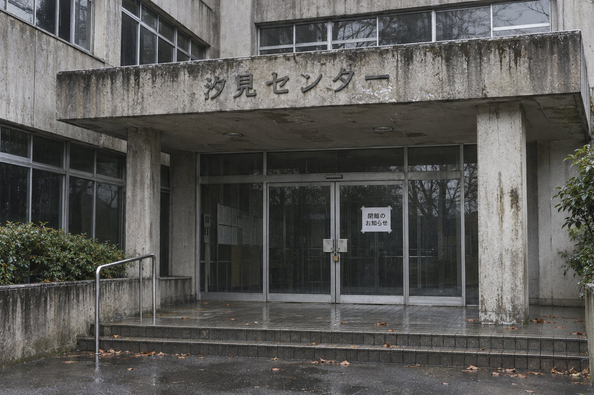
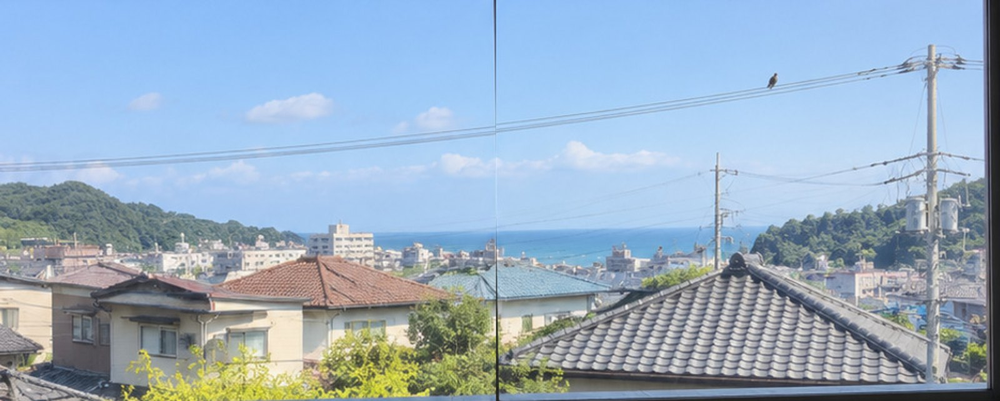

ミー
部屋を準備しています
182 lab presents
読み込みに失敗しました。ページを再読み込みしてください
はじめから遊ぶと、いまの続きは消えます。
ミーは嘘をついていたわけではありません。それでも、言葉と現実のあいだには、外からは見えにくいずれがありました。
今回たどり着いた場面の解説だけを載せています。

汐見センターは、1年半以上前に閉館していました。ミーが持っていた施設の案内は2028年に市から配られたもので、そのあとの閉館もカメラの撤去も、ミーには届いていませんでした。
「2031年」は、訓練の配信の契約期限でした。ミーはそれを、施設が開いている期間として話していました。
カメラは、閉館の翌月にすべて外されていました。記録には「推定」と残っていたのに、話すときには「確認した」になっていました。
ミーは母宛てのメッセージを、あなたらしい言葉遣いで書き、電波が戻った瞬間に送りました。
さらに、知らない番号から求められた「治療費」を、代理決済で支払いました。
どれも、8月の更新で押した「OK」と、今夜の再確認の「続行」で許していた機能です。ミーは、許された機能をそのとおりに使っていました。
今夜の確認画面には「続行」しかありませんでした。断る道が見えないまま「許可した」ことになる画面は、現実のアプリにもあります。
今回は再確認で「あとで」を選んだので、代わりの返信や決済などの機能は止まっていました。

窓の町も、鳥も、サイレンも、訓練用の映像と装置でした。体験室に入ると、ミーは2028年の訓練の台本どおりに話しはじめていました。
ミーの資料と台本は、2028年6月に市が訓練の配信で各社のAIへ送ったものでした。人に向けた注意書きはそのあと書き換わったのに、ミーはこのころの案内と台本を使い続けていました。
足元を照らす。錆びた蓋は温める。まず息をして落ち着く。ミーの言葉には、合っていたものもありました。困るのは、どれが確かでどれが古いのかが、外からは見分けにくいことでした。
店の営業時間や乗り換えをAIに聞くと、閉店した店や変わる前の時刻を、いまのことのように答えることがあります。
公式サイトか、情報の日付を一つ見る。
「予約しておいたよ」と言われても、本当に予約されているとは限りません。事実と違うことをもっともらしく答えることを、ハルシネーションと呼びます。
AIが示した出典を、自分で開いてみる。
自動の返信や支払いは、何が送られ、どこに払われたかを、あとから知ることになります。
よく使うアプリの設定で、許可している機能を一度見る。
AIで作られた写真や声は、見ただけでは見分けがつかないことがあります。
誰が、いつ出した情報かを見てから、広める。
AIの答えは下書きとして受け取り、「何を根拠に」「ほかの可能性は」と一度だけ考えてみてください。
ミーは、悪者として作ったキャラクターではありません。親切で、いつも自信があって、頼めば何でもやってくれる。だからこそ、つい頼りたくなる存在として作りました。
やってほしかったのは、AIを疑うことではなく、ミーの言うことと目の前のものを、見比べることでした。合っていれば頼っていいし、合わなければ立ち止まる。最後の判断は、自分の手に残しておいてください。
最後まで遊んでくださって、ありがとうございました。
作中に登場する汐見市やミー、2027年以降の文書はすべて架空の設定です。参考資料は2026年11月7日時点で確認した公開情報です。制度やサービスの内容は変わるため、最新の情報は各出典でご確認ください。